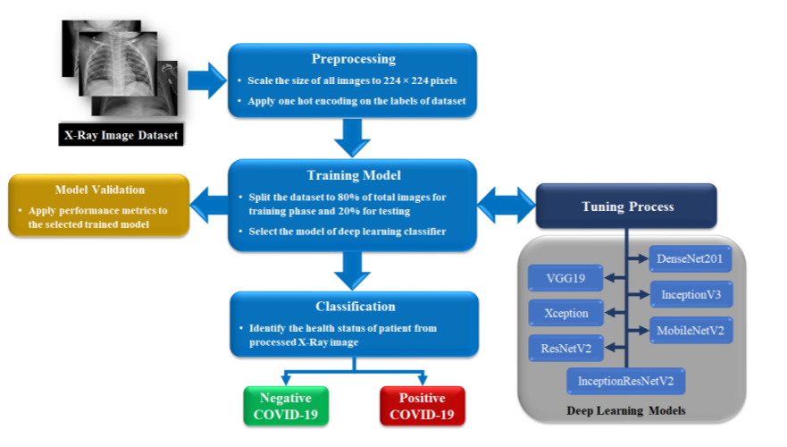

Convolutional Neural Networks for the detection of COVID-19
Stavros Panakakis 2018108,
Sophia Tsivoula 2018130

Ionian University
Department of Informatics
Corfu 2020-2021
Disclaimer: It is not a scientific paper, just a university assignment. More info here

Ionian University
Department of Informatics
Corfu 2020-2021
Abstract
COVID-19 is a newly invented virus that evolved into a pandemic. This virus affects mostly the respiratory system and could cause mild symptoms as fatigue, cough and in some cases even death. There are more than 90 million cases worldwide and the death rate is relatively low at approximately 2%. The virus up to this day, has affected millions of citizens in the entire planet. On a social level many people changed their lifestyle in order to prevent spreading the virus and protect themselves. Also, many people had to lose their jobs or transfer them on the web. Central banks have reduced policy interest rates and announced additional financing facilities in order to help both individuals and businesses to recover. Many computer scientists and physicians created CNNs (Convolutional Neural Networks) in order to be able to detect from a chest X-ray if the patients suffer from COVID-19 or not and reduce the time that doctors have to spend with their patients. In order to create the models, they need large amounts of chest X-rays from COVID-19 patients and non-COVID-19 patients to achieve high accuracy and help physicians diagnose patients fast and securely. The most accurate network was ResNet-101 with 99.51% accuracy. After the review of the papers two different versions of COVnet-101 were developed with 97.4% and 91.5% accuracy correspondingly.
Coronavirus (COVID-19) is a newly infectious disease that has evolved into a pandemic in March 2020. Specifically, the first cases of Coronavirus (COVID-19) were detected in the city of Wuhan, China in December 2019 in a seafood wholesale market. A number of patients initially diagnosed with a form of pneumonia, that later discovered through samples of sufferers, that originates from an unknown, till then, beta-coronavirus virus [1].
The most common symptoms of the virus today are fever, cough, fatigue, expectoration and shortness of breath. More rarely, sufferers experience headaches or dizziness, diarrhea, nausea and vomiting [2]. Examining the samples from the sufferers, it was observed that some social groups are more likely to get infected and experience severe respiratory problems originated from the virus [Figure: 1] [4].
Coronavirus is a RNA positive-strand virus, thus has higher mutation rates than DNA virus. This is the reason why Coronaviruses are easy to adopt in different environments in order to survive and reproduce. COVID-19 is life threatening to humans because the human body has not developed immunity to the virus. Patients’ data is relatively encouraging since 85% of COVID-19 patients suffered from mild infection, 10% from severe and only 5% of patients suffered from critical infection. Most critical COVID-19 cases are elderly people, people suffering from other diseases and individuals who have a weak immune system [5]. This means that COVID-19 is able to spread and reproduce easier and faster on the respiratory system of the patients and cause COVID-19 pneumonia [Figure: 1].
Although the first sign of COVID-19 was found in December 2019 there are more than 85 million cases of COVID-19 worldwide. More than 60 million patients recovered and the death rate, up to this date, is approximately 2.17%. Up to this day most cases are reported in the United States of America with 21 million cases, India with 10 million cases and Brazil with more than 7 million cases.
In europe more than 24.8 million cases have been reported and the death rate in Europe is approximately 2.2%. European countries with the most cases are Russia with more than 3 million cases, France with 2.5 million cases and the United Kingdom with 2.3 million cases.
In Greece there have been reported more than 133 thousand cases and the death rate is 3.3%. More than 23 thousand people have been recovered.
COVID-19 changed people’s lives on a social level during the pandemic. People had to stay inside to prevent spending the virus and had to change their lifestyle and their habits. The pandemic affected people differently on a global level. Citizens had to be quarantined in their houses and a large number of citizens either be unemployed or work from home. More and more people had to transfer their businesses on the web, in order to survive and most of the work needed to be done via a computer. Children from all different age groups had attended online classes and most social events and conferences were held on online platforms.
Another huge social impact of COVID-19 was the prioritization of admissions in medical centers. Hospitals were filled with patients and in extreme cases (Italy, Spain) doctors had to prioritize patients from the seriousness of their condition. There was a lack of medical equipment in some cases and also hospitals and medical centers could cure only patients with severe conditions. Another impact of the COVID-19 pandemic on a personal level is that people had to constantly wear face masks and sanitize regularly but also avoid unnecessary human contact in order to prevent spreading the virus [3].
COVID-19 affected the world economy. Many countries such as the United Kingdom and Japan had to deal with a severe drop in their main index higher than 20% and other countries with big technological companies, were benefited by the pandemic. More specifically, the IMF (International Monetary Fund) estimated that government stimulus packages during the pandemic amounted to 3.3 trillion $ , and additional loans amounted to 4.5 trillion $. In many countries, central banks [28].
Nowadays, thanks to technological advancement, the living standard has been significantly increased. One the medical field, the necessary time to diagnose an illness has drastically decreased thanks to modern techniques and the help of computer scientists. More specifically, new applications with artificial intelligent techniques coupled with radiological imaging can help physicians detect diseases on patients faster and accurately. Another benefit is that these applications can be used especially in remote areas where there is a lack of specialized physicians. The physicians could use these applications to maximize the mean time that takes to diagnose a patient.
These applications could greatly benefit detection of COVID-19 since this virus is highly contagious among patients and physicians. This means that the physicians have to work in high workload conditions and interact with patients. Under these conditions the diagnosis should become faster and even better, in certain cases could be done remotely. The applications need just an X-ray of the patients’ chest to determine if they suffer from COVID-19. In this view, the physicians and computer scientists need large amounts of X-ray images in order to trim models with high accuracy to make the diagnosis of COVID-19 a fast and secure process.
[6]
The first study focuses on the improvement of COVID-19 diagnosis process and proposes artificial intelligent
techniques for reliable and faster results from previous methods, such as computed tomography (CT). More
specifically the study uses ten Convolutional Neural Networks (CNN) and explains the accuracy on each
of them [Table: 4]. The network ResNet-101 [12] achieved 99.51% accuracy, the best one described in
this study. In the study participated 108 patients (48 female and 60 male) positive with COVID-19 and
86 (35 female and 51 male) non-COVID-19 patients. The age of COVID-19 positive is 50.22 % 10.85
and of non-COVID-19 is 61.45 % 15.04. In order to create the CNN, the computed tomography images
were converted to grayscale and reviewed by an experienced radiologist. In order to make the CNN more
efficient, for every different network used in the study, the input layer was replaced with a new one based on
the size of COVID-19 infection patches and the dimensions of the last fully connected layer were set
to the number of classes. The optimizer used was SGDM, the values of learning rate equals 0.01 and
validation frequency was set to 5. The dataset is divided to 80% train data and 20% validation data. In
each epoch the dataset was shaffled and if the training process stayed the same, the training process
stopped.
| Reference | Network | Depth | Parameters | Accuracy |
| [7] | AlexNet | 8 | 61 | 78.92 |
| [8] | VGG-16 | 16 | 138 | 83.33 |
| [8] | VGG-19 | 19 | 144 | 85.29 |
| [9] | SqueezeNet | 18 | 1.24 | 82.84 |
| [10] | GoogleNet | 22 | 7 | 85.29 |
| [11] | MobileNet-V2 | 53 | 3.5 | 92.16 |
| [12] | ResNet-18 | 18 | 11.7 | 91.67 |
| [12] | ResNet-50 | 50 | 25.6 | 94.12 |
| [12] | ResNet-101 | 101 | 44.6 | 99.51 |
| [13] | Xception | 71 | 22.9 | 99.02 |
[14]
The second paper called “Automated detection of COVID-19 cases using deep neural networks with X-ray images”
trained a CNN in order to detect if a person is healthy or suffers from COVID-19 or normal pneumonia. On the paper
were used two different datasets. The first one was called ”A COVID-19 X-ray image database” which was
developed by Cohen JP [16]. The dataset does not contain enough metadata referring to patients nevertheless,
there were 125 positive with COVID-19 patients from whom 43 were female and 83 were male. Another
information is that out of 26 patients the average age of them was 55 years. The second dataset that was
used was the “ChestX-ray8 database” which was developed by Wang et al. [17]. This dataset contained
X-ray images with healthy patients and patients with normal pneumonia however, it does not provide
any metadata for the patients. The network had two different variants. The first one was able to detect
whether or not the patients suffer from COVID-19. In order to train the network, from the second dataset,
only the X-rays with healthy patients were used, to help the network to classify a patient as healthy or
COVID-19 positive. In the second one, the network was able to detect if a patient is healthy or suffers
from COVID-19 or suffers from normal pneumonia. For this network, all two datasets were combined in
order to get all three different results. The network used was the “DarkCovidNet” which is based on
“Darknet-19” [15], the optimizer was Adam, cross entropy was used as a loss function and the learning
rate was 3e-3. Finally, the accuracy for binary classification was 98.08 percent and for categorical 87.02
percent.
[18]
This paper has a combination of features extracted from multi-CNN and used the Bayesnet classifier for the prediction
of COVID-19. The networks that used were Squeezenet[9], Darknet-53[23], MobilenetV2[11], Xception[13], Shufflenet[22]
in order to produce a feature matrix of dimension 950x5000. Each network was pre-trained using Imagenet[21]. The
feature matrix is passed to the Bayesnet classifier which classifies the images into COVID-19 and non-COVID
categories. The first dataset is a combination of a dataset created by Cohen et al[16] and a dataset by Kaggle[19] and
has 453 COVID-19 images and 497 non-COVID images(bacterial, varial pneumonia) and had 91.16 percent
accuracy. The second dataset[20] had 71 COVID-19 images and 7 non-COVID images and had 97.44 percent
accuracy.
[29]
The paper called ”COVIDX-Net: A Framework of Deep Learning Classifiers to Diagnose COVID-19 in X-Ray Image” used transfer learning methods of seven different architectures in order to propose a new network called “COVIDX-NET”. The seven different networks are: VGG19[8], DenseNet201[31], InceptionV3[32], ResNetV2[12], InceptionResNetV2[32], Xception[13], and MobileNetV2[11] and the network is able to detect COVID-19 from 2-dimensional X-ray images. The images[16] [30] scaled down to a fixed size of 244x244 and hoe encoding is allied on the labels to classify the images as COVID-19 positive or negative. The dataset is split to 80 percent trained and 20 percent validation data. Later a random sample of training images is selected to be applied to the deep learning classifier and then evaluation metrics are applied to record the set’s performance. At the end, the data are tested on the tuned deep learning classifier in order to classify the X-ray as COVID-19 positive or negative. The dataset contains 50 Chest X-ray images and half of them (25) are positive cases and the highest accuracy was 90 percent from the VGG19[8] and DenseNet201[31] models.

[33]
The fifth paper called “Viral Pneumonia Screening on Chest X-rays Using Confidence-Aware Anomaly Detection” focuses on the categorization of X-ray images as viral pneumonia (normal pneumonia), non viral pneumonia and healthy. They propose a new model called “CAAD” from the acronyms Confidence-Aware Anomaly Detection. The model contains a feature extractor and a confidence prediction module in order to be able to detect anomalies on images where the confidence score is low, or the anomaly score is high, the images are considered to contain an anomaly. The major advantage of paper is the fact that they treat all viral pneumonia cases as anomalies to maximize the accuracy. The model used six stages of layer-by-layer convolution operations and each X-ray image is processed by MBConv blocks, and later they are transformed into a d-dimensional feature vector by a global average pooling layer. The datasets used were the X-VIRAL dataset with 5.977 viral pneumonia cases and 37.393 non-viral pneumonia or healthy cases and the X-COVID dataset[16] that contains 106 COVID-19 cases and 107 healthy cases. The highest accuracy was achieved was 80.65 percent with the EfficientNet-B0[34] network

For this exercise, instead of just reviewing papers, we designed our custom neural network based on the ResNet-101[12]. In order to explain the custom network, the ResNet-101 should be presented.
The ResNet was trained using ImageNet 2012 Dataset [21] and for its creation two models were trained. More specifically, these two models were a plain model and a residual model.
The plain network is inspired by the philosophy of VGG networks[8]. The filters used in the convolutional layers were mostly 3x3, the network ends with global averages pooling layer and 1000 way fully-connected layer with softmax and the total number of weighted layers is 34.
The residual network is based on the plain network and the main difference is the addition of shortcut connections. These shortcuts function differently when the input and output have the same dimensions and when they do not. More accurately, when the input and output are not of the same dimensions, meaning that the dimensions are increasing, then there are two different scenarios:
1. The shortcut performs identity mapping with extra zero entries padded for increasing dimensions and this option does not add any extra parameters.
2. The projection shortcut is activated in order to match dimensions done by 1×1 convolutions. When the input and output are the same dimensions then the identity shortcuts are used on the network.
ResNet-101 was created with a residual network with 101 layers and 3-layer blocks in order to increase its accuracy.
The ResNet-101 was trained using the dataset named “imagenet 2012”. This dataset has 1000 classes, the models are trained at 1.28 million images and evaluated on 50k validation images. In order to increase the number of images the ResNet-101 creators used data augmentation techniques, more specifically scale augmentation and color augmentation. The images were cropped to 224×244 from random parts either from the original image or from horizontal flipped copies from the images and they applied standard color augmentation [21]. To make the neural network faster and stable through normalization they used batch normalization[26] right after each convolution and before activation.
The optimizer was SGD with a mini-batch size of 256, the learning rate starts from 0.1 and is divided by 10 when the error plateaus and the models are trained for up to 60 × 104 iterations. They used a weight decay of 0.0001, a momentum of 0.9 and dropout was not used[27].
COVnet-101, as mentioned in Section 5.1, was based on ResNet-101. The method used is called “Transfer learning” meaning that ResNet-101 was used as a starting point to create COVnet-101.
The images used in COVnet-101 were re-sized to 128x128, then they were shuffled and normalized by dividing with 255. The input shape of the network is (5144, 128, 128 3), the batch size is 16, the optimizer is Adam and the learning rate is 0.01.
There are two different versions of the network. The first one is called “COVID-19 vs Non-COVID-19” and it detects COVID-19 on patients from X-ray images. This implies that non COVID-19 patients can be either healthy or suffer from other diseases instead of COVID-19. The second version is called “COVID-19 vs Healthy vs Pneumonia” and it detects COVID-19 and/or pneumonia from X-ray images. This version of the network is an improved version of COVID-19 vs Non-COVID-19 since it can detect if a patient is healthy or suffers from COVID-19 or suffers from pneumonia. In other words, the main difference of the two versions is that, the version called COVID-19 vs Healthy vs Pneumonia can detect more than one malady from an image.
The dataset used for healthy and pneumonia chest X-ray images is from Kaggle created by Paul Mooney [24] and it contains 5,863 images. The datasets for COVID-19 detection were ”A COVID-19 X-ray image database” which was developed by Cohen JP [16], ”COVID-19 Chest X-ray Dataset Initiative” [25] as well as ”Actualmed COVID-19 Chest X-ray Dataset Initiative” [25]. The total images are 6432 and the division to trained / validation images percentage was 80% / 20%.
In order to be able to detect if a patient suffers from COVID-19 or pneumonia or not, we created the ”COVID-19 vs Healthy vs Pneumonia” network. For the classifications where used the Loss function which was used is Categorical Cross Entropy and the last’s layer function is Softmax because there were three different labels
The total parameters used on the network are 76,216,707, the trainable parameters are 33,558,531 and the non-trainable 42,658,176. The accuracy of the network was 91,5%
| Layer (type) | Output Shape | Param |
| resnet101 (Functional) | (None, 4, 4, 2048) | 42658176 |
| flatten (Flatten) | (None, 32768) | 0 |
| dense (Dense) | (None, 1024) | 33555456 |
| dropout (Dropout) | (None, 1024) | 0 |
| dense1 (Dense) | (None, 3) | 3075 |
In order to be able to detect if a patient suffers from COVID-19 or not, we created the ”COVID-19 vs Non-COVID-19” network. For the classifications where used the Loss function below is Binary Crossentropy and the Last’s layer function is Sigmoid because of the fact that they are two different labels.
. The total parameters used on the network are76,214,657, the trainable parameters are 33,556,481 and the non-trainable 42,658,176.The accuracy of the network was 97,4 %
| Layer (type) | Output Shape | Param |
| resnet101 (Functional) | (None, 4, 4, 2048) | 42658176 |
| flatten (Flatten) | (None, 32768) | 0 |
| dense (Dense) | (None, 1024) | 33555456 |
| dropout (Dropout) | (None, 1024) | 0 |
| dense1 (Dense) | (None, 1) | 1025 |
The majority of papers focused on the creation of multiple networks. For instance, one for binary and one for categorical classification. However, the most accurate ones were these with binary classification ( COVID-19 vs Non-COVID-19 ). First of all, the first paper[6], after training 10 Convolutional Neural Networks came to the conclusion that ResNet-101[12] had the best accuracy among the rest of the networks and the papers with an really minimal clinical dataset with complete metadata. Nonetheless, the other papers, despite the fact of their decent accuracy, their datasets did not have complete metadata and they used online datasets from the internet. Except from the first paper[6], the third one [18], had a high accuracy with an even more minimal dataset than the first one.[6] It was quite interesting because its method was a bit different than the others. Specifically, it extracted features from multiple Convolutional Neural Networks and used a Bayesnet classifier while the others used only exclusively pre-trained networks or transfer learning. Our custom network, CovNet-101, and the second paper’s network[14], DarkCovidNet, had very close accuracy to the previous ones but their datasets had a bigger ammount of images. Finally, the fourth[29] and the fifth[33] paper had quite lower accuracy than the others, so that their efficiency was not enough.
| Reference | Problem | Method | Types of data | Sample size | Accuracy |
| [6] | Binary Classification | ResNet-101 | Clinical | 108 patients | 99.51 |
| [14] | Binary Classification | DarkCovidNet | Online Datasets | 1127 images | 98.08 |
| [18] | Binary Classification | Multi-CNN and Bayesnet | Online Datasets | 78 images | 97.44 |
| [29] | Binary Classification | VGG19 and DenseNet201 | Online Datasets | 50 images | 90.00 |
| [33] | Binary Classification | CAAD | Online Datasets | 43583 images | 80.65 |
| Custom | Binary Classification | COVnet-101 | Online Datasets | 6432 images | 97.40 |
In the future we would like to focus mainly on the networks’ optimization. We would like to increase their accuracy and make them run faster. Another option would be the creation of an informative system. The informative system could contain a mobile app which could scan Chest x-rays and could classify them as either COVID-19 positive or COVID-19 negative in the case that the COVID-19 vs Non-COVID-19 network was used or could classify them as COVID-19 positive or pneumonia positive or as healthy in the case that the COVID-19 vs Healthy vs Pneumonia network was used and send them to a cloud server with their appropriate information (Disease, Patient ID, Age, Gender). The new X-rays could help the continuous training of the COVnet-101and make it more accurate. At the end of the day a huge dataset could be created in order to help more scientists create their custom networks.
[1] Zhu, Na, et al. A novel coronavirus from patients with pneumonia in China, 2019.. New England Journal of Medicine (2020).
[2] Li, Long-quan, et al. COVID-19 patients’ clinical characteristics, discharge rate, and fatality rate of meta-analysis. Journal of medical virology 92.6 (2020): 577-583.
[3] Huang, Chaolin, et al. Clinical features of patients infected with 2019 novel coronavirus in Wuhan, China.. The lancet 395.10223 (2020): 497-506.
[4] Li, Bo, et al. Prevalence and impact of cardiovascular metabolic diseases on COVID-19 in China. Clinical Research in Cardiology 109.5 (2020): 531-538.
[5] Abdulamir, Ahmed S., and Rand R. Hafidh. The Possible Immunological Pathways for the Variable Immunopathogenesis of COVID–19 Infections among Healthy Adults, Elderly and Children. Electronic Journal of General Medicine 17.4 (2020).
[6] Ardakani, Ali Abbasian, et al. Application of deep learning technique to manage COVID-19 in routine clinical practice using CT images: Results of 10 convolutional neural networks.. Computers in Biology and Medicine (2020): 103795.
[7] Krizhevsky Ilya Sutskever, et al. Imagenet classification with deep convolutional neural networks.. Advances in neural information processing systems. 2012.
[8] Simonyan, Karen, et al. Very deep convolutional networks for large-scale image recognition.. arXiv preprint arXiv:1409.1556 (2014).
[9] Iandola, Forrest N., et al. SqueezeNet: AlexNet-level accuracy with 50x fewer parameters and 0.5 MB model size.. arXiv preprint arXiv:1602.07360 (2016).
[10] C. Szegedy et al. Going deeper with convolutions 2015 IEEE Conference on Computer Vision and Pattern Recognition (CVPR), Boston, MA, 2015, pp. 1-9, doi: 10.1109/CVPR.2015.7298594.
[11] M. Sandler, A. Howard et al. MobileNetV2: Inverted Residuals and Linear Bottlenecks 2018 IEEE/CVF Conference on Computer Vision and Pattern Recognition, Salt Lake City, UT, 2018, pp. 4510-4520, doi: 10.1109/CVPR.2018.00474.
[12] K. He, X. Zhang, et al. Deep Residual Learning for Image Recognition.. 2016 IEEE Conference on Computer Vision and Pattern Recognition (CVPR), Las Vegas, NV, 2016, pp. 770-778, doi: 10.1109/CVPR.2016.90.
[13] Chollet, Fransois. Xception: Deep learning with depthwise separable convolutions.. Proceedings of the IEEE conference on computer vision and pattern recognition. 2017.
[14] Ozturk, Tulin, et al. Automated detection of COVID-19 cases using deep neural networks with X-ray images. Computers in Biology and Medicine (2020): 103792.
[15] Redmon, Joseph et al. YOLO9000: better, faster, stronger.. Proceedings of the IEEE conference on computer vision and pattern recognition. 2017.
[16] J.P. Cohen COVID-19 Image Data Collection. 2020. https://github.com/ieee8023/COVID-chestxray-dataset.
[17] X. Wang et al. Chestx-ray8: hospital-scale chest x-ray database and benchmarks on weakly-supervised classification and localization of common thorax diseases Proceedings of the IEEE Conference on Computer Vision and Pattern Recognition, 2017, pp. 2097–2106.
[18] Abraham, Bejoy et al. Computer-aided detection of COVID-19 from X-ray images using multi-CNN and Bayesnet classifier.. Biocybernetics and biomedical engineering 40.4 (2020): 1436-1445.
[19] Kermany, et al. Identifying medical diagnoses and treatable diseases by image-based deep learning.. Cell 172.5 (2018): 1122-1131.
[20] Dadario AMV. Covid-19 X rays; 2020. http://dx.doi.org/10.34740/KAGGLE/DSV/101946. Available from:https://www.kaggle.com/dsv/1019469.
[21] Deng J et al. Imagenet: alarge-scale hierarchical image database.. 2009 IEEEConference on Computer Vision and Pattern Recognition.IEEE; 2009. p. 248–55.
[22] Zhang X et al. Shufflenet: an extremelyefficient convolutional neural network for mobile devices.. Proceedings of the IEEE Conference on Computer Visionand Pattern Recognition; 2018. p. 6848–56.
[23] Redmon J et al. Yolov3: an incremental improvement.. 2018, arXiv preprint arXiv:1804.02767
[24] Paul Mooney. Chest X-Ray Images (Pneumonia); 2017 Kaggle.. Available from: https://www.kaggle.com/paultimothymooney/chest-xray-pneumonia.
[25] Wang et al. COVID-Net: a tailored deep convolutional neural network design for detection of COVID-19 cases from chest X-ray images 2020, https://doi.org/10.1038/s41598-020-76550-z
[26] S. Ioffe and C. Szegedy. Batch normalization: Accelerating deep network training by reducing internal covariate shift.. In ICML, 2015.
[27] G. E. Hinton et al. Improving neural networks by preventing co- adaptation of feature detectors.. arXiv:1207.0580, 2012.
[28] Akhtaruzzaman, Md, Sabri Boubaker, and Ahmet Sensoy ”Financial contagion during COVID–19 crisis.”. Finance Research Letters (2020): 101604.
[29] Hemdan, Ezz El-Din, Marwa A. Shouman, and Mohamed Esmail Karar. ”Covidx-net: A framework of deep learning classifiers to diagnose covid-19 in x-ray images.” arXiv preprint arXiv:2003.11055 (2020).
[30] Pyimagesearch Medical dataset Available from https://www.pyimagesearch.com/category/medical/
[31] G. Huang et al. ”Densely connected convolutional networks,” in Proceedings - 30th IEEE Conference on Computer Vision and Pattern Recognition.. CVPR 2017 vol. 2017-January, ed: Institute of Electrical and Electronics Engineers Inc., 2017, pp. 2261-2269.
[32] C. Szegedy et al. ”Rethinking the Inception Architecture for Computer Vision”.. 2016 IEEE Conference on Computer Vision and Pattern Recognition (CVPR), 2016, pp. 2818-2826.
[33] Zhang, Jianpeng, et al. ”Covid-19 screening on chest x-ray images using deep learning based anomaly detection.”. arXiv preprint arXiv:2003.12338 (2020).
[34] M. Tan and Q. Le “Efficientnet: Rethinking model scaling for convolutional neural networks.” International Conference on Machine Learning, 2019, pp. 6105–6114.